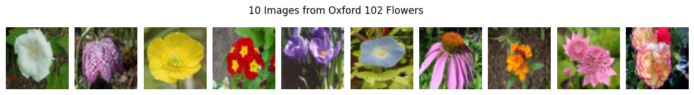
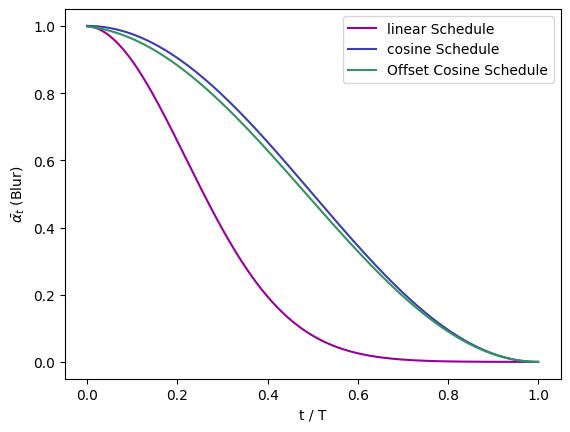
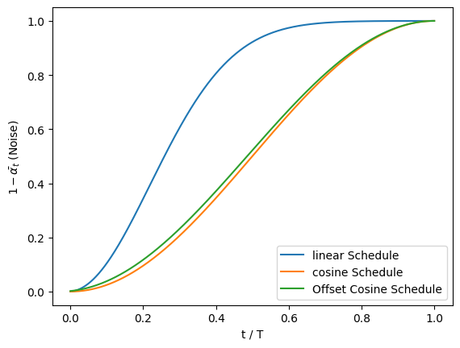
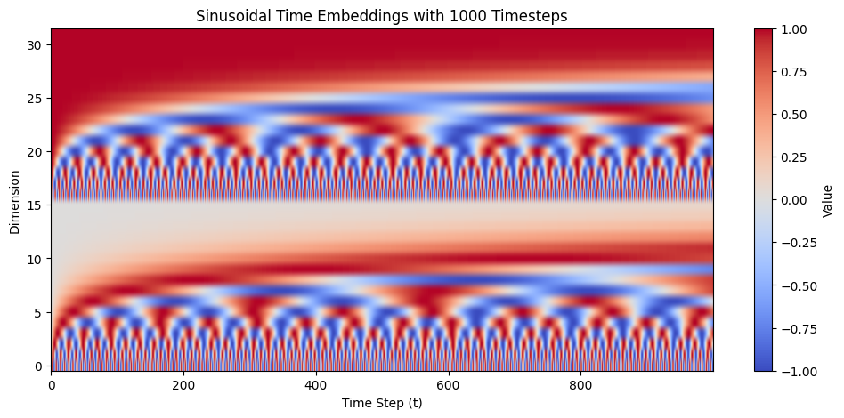
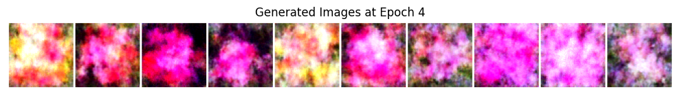
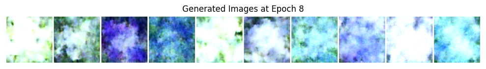

import torch
import torch.nn as nn
import torchvision
import torchvision.transforms as transforms
from torchvision.utils import make_grid, save_image
from torch.utils.data import DataLoader, ConcatDataset
import matplotlib.pyplot as plt
import numpy as np
import math
import osLoad Dataset
# 1. 전처리 미리 정의
IMG_RES = (64, 64)
BATCH_SIZE = 64
transform = transforms.Compose([
transforms.Resize(IMG_RES),
transforms.ToTensor(), # 1) [0.0, 1.0] 실수 범위로 압축, 2) (H, W, C) -> (C, H, W)
transforms.Normalize((0.5, 0.5, 0.5), (0.5, 0.5, 0.5)) # 각각의 RGB 채널 평균 0.5, 표준편차 0.5로 Norm
])
# 2. Load train/validation/test datasets
train_set = torchvision.datasets.Flowers102(root='./data', split='train', download=True, transform=transform)
val_set = torchvision.datasets.Flowers102(root='./data', split='val', download=True, transform=transform)
test_set = torchvision.datasets.Flowers102(root='./data', split='test', download=True, transform=transform)
# 3. 데이터셋 3종류 하나로 합치기(validation, test 불필요)
dataset = ConcatDataset([train_set, val_set, test_set])
# 4. 필요없는 변수 삭제 -> 메모리 절약
del train_set, val_set, test_set
# 5. dataloader
dataloader = DataLoader(
dataset,
batch_size=BATCH_SIZE, # 64개씩 batch 만들기
shuffle=True, # 섞기
num_workers=0,
drop_last=True, # 자투리 버리기
pin_memory=True,
)100%|██████████| 345M/345M [00:09<00:00, 37.0MB/s]
100%|██████████| 502/502 [00:00<00:00, 2.14MB/s]
100%|██████████| 15.0k/15.0k [00:00<00:00, 40.6MB/s]# shape 확인
iterForShapeCheck = iter(dataloader)
oneBatchTensorForShapeCheck = next(iterForShapeCheck)[0]
print(f"Shape of One Batch: {oneBatchTensorForShapeCheck.shape}")Shape of One Batch: torch.Size([64, 3, 64, 64])# 10개만 시각화해서 확인
## 1) batch 하나 준비
dataIterator = iter(dataloader) # dataloader은 iterable 하지만 iterator는 아님 -> iterator로 만들어주기
images, labels = next(dataIterator) # images, labels에 batch 하나가 담김
## 2) 도화지 정의
fig, axes = plt.subplots(1, 10, figsize=(15, 3)) # fig: 전체 도화지, axes: 각각의 칸(numpy array)
plt.subplots_adjust(wspace=0.1) # 이미지 사이 간격
## 3) 그림 그리기
for i in range(10):
img = images[i]
img = (img * 0.5) + 0.5 # Normalize 했던거 원래대로 복구
img = img.permute(1, 2, 0) # (C, H, W) -> (H, W, C)
axes[i].imshow(img.cpu().numpy()) # numpy(): Tensor -> Numpy Array
axes[i].axis('off') # 눈금제거
plt.suptitle("10 Images from Oxford 102 Flowers", y=0.8)
plt.show()
Diffusion Schedule (Forward Process)
# 3가지 diffusion schedules - Linear/Cosine/Offset Cosine
class DiffusionSchedules:
def __init__(self, T=1000):
self.T = T
self.times = torch.linspace(0, 1, T) # [0.000, 0.001, 0.002, ... 0.999, 1.000]
## 1) Linear Diffusion Schedules
### t 지나면서 beta가 linear 하게 커짐
def linear_diffusion_schedule(self):
## beta 범위 설정
min_beta = 0.0001
max_beta = 0.02
# betas, alphas, alpha_bars
betas = min_beta + self.times * (max_beta - min_beta)
alphas = 1 - betas
alpha_bars = torch.cumprod(alphas, dim=0) # coumprod: 누적 곱셈 [2, 3, 5] -> [2, 6, 30]
# noise, blur rates(tensor)
noise_rates = torch.sqrt(1 - alpha_bars)
blur_rates = torch.sqrt(alpha_bars)
return blur_rates, noise_rates # 앞에 곱하는걸 앞에 썼음.
## 2) Cosine Diffusion Schedules
### sin^2 + cos^2 = 1 이용한 schedule
def cosine_diffusion_schedule(self):
blur_rates = torch.cos(self.times * math.pi / 2)
noise_rates = torch.sin(self.times * math.pi / 2)
return blur_rates, noise_rates
## 3) Offset Cosine Schedules
### 너무 어둡거나 밝은 이미지 생성 방지
def offset_diffusion_schedule(self):
min_blur_rate = 1e-3
max_blur_rate = 0.999
max_blur = torch.tensor(max_blur_rate).clamp(-1+1e-6, 1-1e-6)
min_blur = torch.tensor(min_blur_rate).clamp(-1+1e-6, 1-1e-6)
# min, max의 cos 각도
start_angle = torch.acos(max_blur)
end_angle = torch.acos(min_blur)
# 각도를 linear하게 세팅해서 sin, cos 사용
diffusion_angles = start_angle + self.times * (end_angle - start_angle)
blur_rates = torch.cos(diffusion_angles)
noise_rates = torch.sin(diffusion_angles)
return blur_rates, noise_ratesSchedules Visualizations
# Schedule별 blur_rates, noise_rates 시각화
schedules = DiffusionSchedules(T=1000) # Schdule들 모아놓은 class 호출
linear_blurs, linear_noises = schedules.linear_diffusion_schedule()
cosine_blurs, cosine_noises = schedules.cosine_diffusion_schedule()
offset_blurs, offset_noises = schedules.offset_diffusion_schedule()
diffusion_times = schedules.times#1. blurs: alpha_t bar
plt.plot(diffusion_times, linear_blurs**2, color="#990099", label="linear Schedule")
plt.plot(diffusion_times, cosine_blurs**2, color="#3b3eac", label="cosine Schedule")
plt.plot(diffusion_times, offset_blurs**2, color="#329262", label="Offset Cosine Schedule")
plt.xlabel("t / T")
plt.ylabel(r"$\bar{\alpha_t}$ (Blur)")
plt.legend()
plt.show()
#2. noises: 1 - alpha_t bar
plt.plot(diffusion_times, linear_noises**2, label="linear Schedule")
plt.plot(diffusion_times, cosine_noises**2, label="cosine Schedule")
plt.plot(diffusion_times, offset_noises**2, label="Offset Cosine Schedule")
plt.xlabel("t / T")
plt.ylabel(r"$1-\bar{\alpha_t}$ (Noise)")
plt.legend()
plt.show()
Build Parts for Model
Sinusoidal Embedding
class SinusoidalTimeEmbedding(nn.Module):
# class가 호출되면 -> __init__실행 -> nn.Module(pytorch)의 __init__ 실행
def __init__(self, dim):
super().__init__() # super(): 상속받은 부모 클래스인 nn.Module
assert dim % 2 == 0 and dim >= 4, "time embedding dim must be even and >= 4"
self.dim = dim # self: SinusoidalTimeEmbedding로 만든 instance
def forward(self, time):
# input: time - (Batch_Size, ) shape의 1D tensor
# output: embeddings - (Batch_Size, dim) shpae의 2D tensor
device = time.device # time이 있을 공간(CPU or GPU)이 나중에 연산을 할 기준 공간
# frequency: 1 / 10000^(2i / dim) -> 1 / 10000^(i / half_dim - 1) [0부터 시작하니까]
# log 씌워서 계산 (컴퓨터가 계산하기 더 좋다고 함)
# - {i / (half_dim - 1)} * log(10000) = -i * {log(10000) / half_dim - 1}
## 1. half_dim 계산
half_dim = self.dim // 2
## 2. log(10000) / half_dim - 1
pre_frequency = math.log(10000) / (half_dim - 1)
## 3. i 만들기
i = torch.arange(half_dim, device=device)
##4. frequency 완성
frequency = torch.exp(-i * pre_frequency)
# time(Batch_size, )와 frequency(half_dim, ) 텐서 변형해서 행렬곱 -> half_embeddings(Batch_size, half_dim)
half_embeddings = time[:, None] * frequency[None, :]
# half_embeddings에 sin, cos 적용해서 수평으로 붙이기 -> embeddings(Batch_size, dim) 완성
embeddings = torch.cat((half_embeddings.sin(), half_embeddings.cos()), dim=-1)
return embeddingsVisualization
# instance
embedding_dim = 32
time_embedder = SinusoidalTimeEmbedding(embedding_dim) # sinusoidal 인스턴스 생성(32차원으로)
times_sample = torch.arange(1000) # t = 0 ~ 999
embeddings = time_embedder(times_sample) # time_embedder.forward() 안 해도 forward 호출해준다 (pytorch에 call함수로 잘 설계돼있다)
# plot
plt.figure(figsize=(12, 5))
embedding_matrix = embeddings.cpu().numpy().T # embedding을 transpose -> x축: t, y축: dim
# aspect='auto': 픽셀 하나 정사각형 고집 부리지말고 figsize에 맞춰서 꽉 채워라
# origin='lower': 수학 그래프 그리듯이 원점을 가장 아래에 둬라
plt.imshow(embedding_matrix, aspect='auto', cmap='coolwarm', origin='lower')
plt.title("Sinusoidal Time Embeddings with 1000 Timesteps")
plt.xlabel("Time Step (t)")
plt.ylabel("Dimension")
plt.colorbar(label="Value")
plt.show()
Residual Block
Normalization 정리
(N=64, C=64, H=64, W=64) 기준 - Batch Norm: Batch 1 안에서 Channel 1을 끌어모아서 모든 픽셀에 대해 평균, 표준편차 구함 -> Batch 1 안에서 C(채널 개수)개의 평균과 표준편차 나옴 -> N 고정, C고정 - Layer Norm: Img 1에서 모든 픽셀에 대해 평균, 표준편차 구함 -> Batch 하나 당 Batch_Size개의 평균과 표준편차 나옴 -> C, H, W 고정 - Group Norm: Img 1, Channel 1, 2 에서 모든 픽셀에 대해 평균, 표준편차 구함 -> 보통 사진 하나 당 그룹을 32개로 고정 -> Batch 하나 당 32 * Batch_Size 개의 평균과 표준편차 나옴 -> N, H, W 고정, C 그룹화 고정
class ResidualBlock(nn.Module):
def __init__(self, input_channels, output_channels, time_emb_dim, groups=8): # groups: GroupNorm 할 때 그룹개수(32개가 국룰이지만 채널 개수 충분하지 않아서 8로)
super().__init__()
# part 1
## 3x3 convolution layer에 통과시킨다. padding 1로 줘야 projection 의 사이즈가 원래 이미지 사이즈랑 같아짐
## poj_size = img_size - conv_size + 1 에서 conv_size = 3 이므로 poj_size = img_size - 2 -> img_size에 2 더해줘야 같아짐
self.proj1 = nn.Conv2d(input_channels, output_channels, kernel_size=3, padding=1)
## GroupNorm
self.norm1 = nn.GroupNorm(groups, output_channels)
## Activation function: SiLU = x * sigma(x), where sigma(x) = sigmoid
self.act1 = nn.SiLU()
# time embedding part
self.time_embedding = nn.Sequential(
nn.SiLU(), # time embedding을 SiLU에 통과시켜서 비선형성 부여
nn.Linear(time_emb_dim, output_channels) # FFN 통과시켜서 output_channel이랑 time_emb_dim 똑같이 만들어줌
)
# part 2
self.proj2 = nn.Conv2d(output_channels, output_channels, kernel_size=3, padding=1)
self.norm2 = nn.GroupNorm(groups, output_channels)
self.act2 = nn.SiLU()
# residual connection part
## channel 다르면 1x1 convolution으로 맞춰준다
if input_channels != output_channels:
self.connection = nn.Conv2d(input_channels, output_channels, kernel_size=1) # (input_channels, 1, 1)인 kernel을 output_channels개 준비해서 convolution
else:
self.connection = nn.Identity() # 그냥 통과(y = x)
def forward(self, x, t):
# x(img): (Batch_Size, input_channels, H, W)
# t: (Batch_Size, time_emb_dim)
h_for_connection = x # Residual Connection 위해서 저장
# part 1
h = self.proj1(x)
h = self.norm1(h)
h = self.act1(h)
# time embedding adding part
time_emb = self.time_embedding(t) # time embedding 변환 -> (Batch_Size, output_channels)
h = h + time_emb[:, :, None, None] # time_emb: (Batch_Size, output_channels) -> (Batch_Size, output_channels, 1, 1) (H, W)가 (1, 1)이 아니어도 같은 값 다 더해짐
# part 2
h = self.proj2(h)
h = self.norm2(h)
h = self.act2(h)
# residual connection part(return)
return h + self.connection(h_for_connection)Attention Block
class AttentionBlock(nn.Module):
def __init__(self, channels, groups=8):
super().__init__()
#1. Group Norm
self.norm = nn.GroupNorm(groups, channels)
#2. Q, K, V 만들 1x1 Convolution Layer
self.qkv_layer = nn.Conv2d(channels, channels * 3, kernel_size=1)
#3. 마무리 projection할 Convolution Layer
self.proj = nn.Conv2d(channels, channels, kernel_size=1)
def forward(self, x):
B, C, H, W = x.shape # shape 정보 필요
h = x # for skip-connection
# Norm, QKV
qkv = self.qkv_layer(self.norm(h))
# (B, 3C, H, W) -> (B, 3C, H*W) -> (B, H*W, 3C)
qkv = qkv.reshape(B, C * 3, -1).permute(0, 2, 1)
# Query, Key, Value 분해
q, k, v = qkv.chunk(3, dim=-1)
# Attention score
## softmax(Q * K^T/sqrt(d))
scale = int(C) ** (-0.5)
attn = torch.bmm(q, k.transpose(1, 2)) * scale # bmm = batch matrix multiplication
attn = torch.nn.functional.softmax(attn, dim=-1)
## softmax(Q * K^T/sqrt(d)) * v
h = torch.bmm(attn, v)
# 원래 shape으로 복구
# (B, H*W, C) -> (B, C, H*W) -> (B, C, H, W)
h = h.permute(0, 2, 1).reshape(B, C, H, W)
# final projection, add(skip-connection)
h = self.proj(h)
return x + hDown Block
class DownBlock(nn.Module):
def __init__(self, input_channels, output_channels, time_emb_dim, groups=8):
super().__init__()
# part 1: residual block 2개 쌓기
self.res_block1 = ResidualBlock(input_channels, output_channels, time_emb_dim, groups)
self.res_block2 = ResidualBlock(output_channels, output_channels, time_emb_dim, groups)
# part 2: Downsampling
self.downsample = nn.Conv2d(output_channels, output_channels, kernel_size=3, stride=2, padding=1) # 두 칸씩 이동해서 픽셀 수 절반으로 줄임
def forward(self, x, t):
# x: B(Batch_size, input_channels, H, W)
# residual block 두 번 통과
x = self.res_block1(x, t)
x = self.res_block2(x, t)
# downsampling
h = x
x = self.downsample(x) # (Batch_Size, output_channels, H/2, W/2)
return x, hUp Block
class UpBlock(nn.Module):
def __init__(self, input_channels, output_channels, time_emb_dim, groups=8):
super().__init__()
# part1: upsampling
## Transposed Convolution: 픽셀 한 칸을 여러 칸으로 흩뿌리기(Convoludtion의 역연산) -> 2배로 커짐
self.upsample = nn.ConvTranspose2d(input_channels, output_channels, kernel_size=2, stride=2) # 2*2 영역에 뿌리기, 새 도화지에서 2칸씩 이동
# part2: residual block 2개 쌓기
self.res_block1 = ResidualBlock(output_channels * 2, output_channels, time_emb_dim, groups) # Residual connection 한 것과 올라온 x 합칠 것
self.res_block2 = ResidualBlock(output_channels, output_channels, time_emb_dim, groups)
def forward(self, x, residual, t):
# x: (Batch_Size, input_channels, H, W) -> down block 거쳐온 이미지
# residual: (Batch_Size, output_channels, H*2, W*2) -> Down Block에서 저장해둔 것
# Upsampling(H, W -> 2H, 2W)
x = self.upsample(x)
# Concatenation
## dim=1 방향: Channel 방향
## (B, C, H, W) -> (B, 2C, H, W)
x = torch.cat([x, residual], dim=1)
# ResBlock 통과시키기
x = self.res_block1(x, t)
x = self.res_block2(x, t)
return xU-Net
class UNet(nn.Module):
def __init__(self, channel_in = 3, channel_out = 3, time_dim = 32):
super().__init__()
#1. Time Embedding
self.time_dim = time_dim
self.time_mlp = nn.Sequential(
SinusoidalTimeEmbedding(time_dim), # time embedding 생성
nn.Linear(time_dim, time_dim), # FFN
nn.SiLU() # activation function -> 선형성 깨뜨리기
)
#2. Initial Image Transform(3 Channels -> 64 Channels)
self.conv_init = nn.Conv2d(channel_in, 64, kernel_size=3, padding=1)
#3. Down
self.down1 = DownBlock(64, 128, time_dim) # 64 -> 128
self.down2 = DownBlock(128, 256, time_dim) # 128 -> 256
#4. Bottom
self.bottom1 = ResidualBlock(256, 256, time_dim)
self.attn_bottom = AttentionBlock(256) # Attention Block
self.bottom2 = ResidualBlock(256, 256, time_dim)
#5. Up
self.up1 = UpBlock(256, 256, time_dim)
self.up2 = UpBlock(256, 128, time_dim)
#6. Output
self.conv_out = nn.Conv2d(128, channel_out, kernel_size=1)
def forward(self, x, t):
t = self.time_mlp(t) # time embedding
x = self.conv_init(x) # initial transform
x, h1 = self.down1(x, t) # down, save input
x, h2 = self.down2(x, t)
x = self.bottom1(x, t) # bottom
x = self.attn_bottom(x)
x = self.bottom2(x, t)
x = self.up1(x, h2, t) # up(skip connection)
x = self.up2(x, h1, t)
return self.conv_out(x)Build Diffusion Model
class DiffusionModel(nn.Module):
def __init__(self, network):
super().__init__()
self.network = network # U-Net
self.T = 1000 # number of timestep
schedules = DiffusionSchedules(T=self.T) # Scheduler instance
self.blur_rates, self.noise_rates = schedules.linear_diffusion_schedule() # scheduler: linear로 선택
# Buffer로 등록(GPU로 이동)
self.register_buffer("blur_rates_buffer", self.blur_rates)
self.register_buffer("noise_rates_buffer", self.noise_rates)
def forward(self, x_0):
# x_0: 원본 이미지
batch_size = x_0.shape[0]
device = x_0.device # 마찬가지로 기준 연산공간 지정
#1. random t sampling: (batch_size, )만큼
t = torch.randint(0, self.T, (batch_size, ), device=device)
#2. 뽑은 t에 대해 blur_rate, noise_rate 준비 -> (batch_size, 1, 1, 1) shape으로
blur_rate = self.blur_rates_buffer[t].reshape(-1, 1, 1, 1)
noise_rate = self.noise_rates_buffer[t].reshape(-1, 1, 1, 1)
#3. random noise -> label
noise = torch.randn_like(x_0) # x_0랑 같은 모양으로 N(0, 1)에서 sampling
#4. Forward Process
img_noisy = blur_rate * x_0 + noise_rate * noise
#5. 망가진 이미지, t 주고 U-Net이 Noise 예측
pred_noise = self.network(img_noisy, t)
#6. Loss
loss = nn.functional.mse_loss(pred_noise, noise)
return loss
@torch.no_grad()
def sample(self, image_size, batch_size=8, channels=3):
device = next(self.parameters()).device
# 1. 완전한 noise에서 시작
img = torch.randn((batch_size, channels, image_size, image_size), device=device)
epsilon = 1e-5
# 2. T-1 -> 0으로 denoising
for t in range(self.T - 1, -1, -1):
t_batch = torch.full((batch_size,), t, device=device, dtype=torch.long)
# Noise prediction
pred_noise = self.network(img, t_batch)
# Current timestep의 blur/noise rates
current_blur = self.blur_rates_buffer[t]
current_noise = self.noise_rates_buffer[t]
# Previous timestep의 blur rate
if t > 0:
previous_blur = self.blur_rates_buffer[t - 1]
else:
previous_blur = torch.tensor(1.0, device=device)
# Alpha_bar 계산
alpha_bar_t = current_blur ** 2
alpha_bar_prev = previous_blur ** 2
# Alpha_t 계산
if t > 0:
alpha_t = alpha_bar_t / torch.clamp(alpha_bar_prev, min=epsilon)
alpha_t = alpha_t.clamp(epsilon, 1.0)
else:
alpha_t = torch.tensor(1.0, device=device)
# Beta_t 계산
beta_t = (1.0 - alpha_t).clamp(min=0.0, max=1.0)
# Mean 계산
sqrt_one_minus_alpha_bar_t = torch.sqrt(torch.clamp(1.0 - alpha_bar_t, min=epsilon))
coef = beta_t / sqrt_one_minus_alpha_bar_t
sqrt_alpha_t = torch.sqrt(torch.clamp(alpha_t, min=epsilon))
mean = (1.0 / sqrt_alpha_t) * (img - coef * pred_noise)
# Variance와 noise 추가
if t > 0:
numerator = beta_t * (1.0 - alpha_bar_prev)
denominator = torch.clamp(1.0 - alpha_bar_t, min=epsilon)
posterior_var = numerator / denominator
posterior_var = posterior_var.clamp(min=0.0)
sigma_t = torch.sqrt(posterior_var)
z = torch.randn_like(img)
img = mean + sigma_t * z
else:
img = mean
img = img.clamp(-1.0, 1.0)
img = (img + 1.0) / 2.0
return imgTrain
#1. Model, Optimizer
device = torch.device("cuda" if torch.cuda.is_available() else "cpu")
unet = UNet(channel_in=3, channel_out=3, time_dim=32).to(device)
model = DiffusionModel(network=unet).to(device)
optimizer = torch.optim.Adam(model.parameters(), lr=1e-4)
#2. Folders for saving
OUT_DIR = "./output"
CKPT_DIR = "./checkpoint"
os.makedirs(OUT_DIR, exist_ok=True)
os.makedirs(CKPT_DIR, exist_ok=True)
#3. Learning Loop
EPOCHS = 25
NUM_SAMPLE = 10
IMG_SIZE = 64
SAMPLE_EVERY = 1
SAVE_CKPT_EVERY = 50 # 50 epoch마다 체크포인트 저장
# Loss 기록용
loss_history = []
print(f"Starting training for {EPOCHS} epochs...")
print(f"Device: {device}")
print(f"Total batches per epoch: {len(dataloader)}")
for epoch in range(EPOCHS):
model.train()
epoch_loss = 0.0
num_batches = 0
for images, _ in dataloader:
images = images.to(device)
optimizer.zero_grad()
loss = model(images)
loss.backward()
optimizer.step()
epoch_loss += loss.item()
num_batches += 1
avg_loss = epoch_loss / max(1, num_batches)
loss_history.append(avg_loss)
# Progress print
print(f"[Epoch {epoch+1:3d}/{EPOCHS}] avg_loss = {avg_loss:.6f}")
# 샘플 이미지 생성 (SAMPLE_EVERY마다)
if (epoch + 1) % SAMPLE_EVERY == 0 or epoch == 0:
model.eval()
with torch.no_grad():
torch.manual_seed(42)
if torch.cuda.is_available():
torch.cuda.manual_seed_all(42)
samples = model.sample(image_size=IMG_SIZE, batch_size=NUM_SAMPLE, channels=3)
grid = make_grid(samples.cpu(), nrow=10, padding=2, pad_value=1.0)
grid = grid.clamp(0, 1)
save_path = f"{OUT_DIR}/generated_img_{epoch+1:03d}.png"
save_image(grid, save_path)
plt.figure(figsize=(10, 2))
plt.imshow(grid.permute(1, 2, 0).numpy())
plt.axis("off")
plt.title(f"Generated Images at Epoch {epoch+1}")
plt.tight_layout()
plt.show()
print(f"✓ Saved image: {save_path}")
# 체크포인트 저장 (SAVE_CKPT_EVERY마다)
if (epoch + 1) % SAVE_CKPT_EVERY == 0:
checkpoint = {
'epoch': epoch + 1,
'model_state_dict': model.state_dict(),
'optimizer_state_dict': optimizer.state_dict(),
'loss': avg_loss,
'loss_history': loss_history,
}
ckpt_path = f"{CKPT_DIR}/checkpoint_epoch_{epoch+1:03d}.pt"
torch.save(checkpoint, ckpt_path)
print(f"Saved checkpoint: {ckpt_path}")
print("\n" + "="*60)
print("Training completed!")
print("="*60)
# 최종 Loss 그래프
plt.figure(figsize=(12, 5))
plt.plot(loss_history, linewidth=2)
plt.xlabel('Epoch', fontsize=12)
plt.ylabel('Average Loss', fontsize=12)
plt.title('Training Loss Over Time', fontsize=14, fontweight='bold')
plt.grid(True, alpha=0.3)
plt.tight_layout()
plt.savefig(f"{OUT_DIR}/loss_curve.png", dpi=150)
plt.show()
print(f"Saved loss curve: {OUT_DIR}/loss_curve.png")
# 최종 샘플 생성
print("\nGenerating final samples...")
model.eval()
with torch.no_grad():
torch.manual_seed(42)
if torch.cuda.is_available():
torch.cuda.manual_seed_all(42)
samples = model.sample(image_size=IMG_SIZE, batch_size=25, channels=3)
grid = make_grid(samples.cpu(), nrow=10, padding=2, pad_value=1.0)
grid = grid.clamp(0, 1)
save_path = f"{OUT_DIR}/final_samples.png"
save_image(grid, save_path)
plt.figure(figsize=(10, 2))
plt.imshow(grid.permute(1, 2, 0).numpy())
plt.axis("off")
plt.tight_layout()
plt.show()
print(f"Saved final samples: {save_path}")Starting training for 25 epochs...
Device: cuda
Total batches per epoch: 127
[Epoch 1/25] avg_loss = 0.171135
✓ Saved image: ./output/generated_img_001.png
[Epoch 2/25] avg_loss = 0.069920
✓ Saved image: ./output/generated_img_002.png
[Epoch 3/25] avg_loss = 0.055337
✓ Saved image: ./output/generated_img_003.png
[Epoch 4/25] avg_loss = 0.049606
✓ Saved image: ./output/generated_img_004.png
[Epoch 5/25] avg_loss = 0.046708
✓ Saved image: ./output/generated_img_005.png
[Epoch 6/25] avg_loss = 0.044768
✓ Saved image: ./output/generated_img_006.png
[Epoch 7/25] avg_loss = 0.043179
✓ Saved image: ./output/generated_img_007.png
[Epoch 8/25] avg_loss = 0.041937
✓ Saved image: ./output/generated_img_008.png--------------------------------------------------------------------------- KeyboardInterrupt Traceback (most recent call last) /tmp/ipython-input-3804794597.py in <cell line: 0>() 30 num_batches = 0 31 ---> 32 for images, _ in dataloader: 33 images = images.to(device) 34 /usr/local/lib/python3.12/dist-packages/torch/utils/data/dataloader.py in __next__(self) 730 # TODO(https://github.com/pytorch/pytorch/issues/76750) 731 self._reset() # type: ignore[call-arg] --> 732 data = self._next_data() 733 self._num_yielded += 1 734 if ( /usr/local/lib/python3.12/dist-packages/torch/utils/data/dataloader.py in _next_data(self) 786 def _next_data(self): 787 index = self._next_index() # may raise StopIteration --> 788 data = self._dataset_fetcher.fetch(index) # may raise StopIteration 789 if self._pin_memory: 790 data = _utils.pin_memory.pin_memory(data, self._pin_memory_device) /usr/local/lib/python3.12/dist-packages/torch/utils/data/_utils/fetch.py in fetch(self, possibly_batched_index) 50 data = self.dataset.__getitems__(possibly_batched_index) 51 else: ---> 52 data = [self.dataset[idx] for idx in possibly_batched_index] 53 else: 54 data = self.dataset[possibly_batched_index] /usr/local/lib/python3.12/dist-packages/torch/utils/data/dataset.py in __getitem__(self, idx) 344 else: 345 sample_idx = idx - self.cumulative_sizes[dataset_idx - 1] --> 346 return self.datasets[dataset_idx][sample_idx] 347 348 @property /usr/local/lib/python3.12/dist-packages/torchvision/datasets/flowers102.py in __getitem__(self, idx) 88 89 if self.transform: ---> 90 image = self.transform(image) 91 92 if self.target_transform: /usr/local/lib/python3.12/dist-packages/torchvision/transforms/transforms.py in __call__(self, img) 93 def __call__(self, img): 94 for t in self.transforms: ---> 95 img = t(img) 96 return img 97 /usr/local/lib/python3.12/dist-packages/torch/nn/modules/module.py in _wrapped_call_impl(self, *args, **kwargs) 1773 return self._compiled_call_impl(*args, **kwargs) # type: ignore[misc] 1774 else: -> 1775 return self._call_impl(*args, **kwargs) 1776 1777 # torchrec tests the code consistency with the following code /usr/local/lib/python3.12/dist-packages/torch/nn/modules/module.py in _call_impl(self, *args, **kwargs) 1784 or _global_backward_pre_hooks or _global_backward_hooks 1785 or _global_forward_hooks or _global_forward_pre_hooks): -> 1786 return forward_call(*args, **kwargs) 1787 1788 result = None /usr/local/lib/python3.12/dist-packages/torchvision/transforms/transforms.py in forward(self, img) 352 PIL Image or Tensor: Rescaled image. 353 """ --> 354 return F.resize(img, self.size, self.interpolation, self.max_size, self.antialias) 355 356 def __repr__(self) -> str: /usr/local/lib/python3.12/dist-packages/torchvision/transforms/functional.py in resize(img, size, interpolation, max_size, antialias) 475 warnings.warn("Anti-alias option is always applied for PIL Image input. Argument antialias is ignored.") 476 pil_interpolation = pil_modes_mapping[interpolation] --> 477 return F_pil.resize(img, size=output_size, interpolation=pil_interpolation) 478 479 return F_t.resize(img, size=output_size, interpolation=interpolation.value, antialias=antialias) /usr/local/lib/python3.12/dist-packages/torchvision/transforms/_functional_pil.py in resize(img, size, interpolation) 251 raise TypeError(f"Got inappropriate size arg: {size}") 252 --> 253 return img.resize(tuple(size[::-1]), interpolation) 254 255 /usr/local/lib/python3.12/dist-packages/PIL/Image.py in resize(self, size, resample, box, reducing_gap) 2319 ) 2320 -> 2321 return self._new(self.im.resize(size, resample, box)) 2322 2323 def reduce( KeyboardInterrupt: